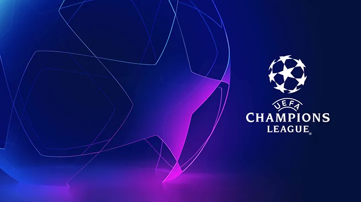

Hasil Drawing Perempat-Final Liga Champions: Final Kepagian? Chelsea Vs Real Madrid, Manchester City Vs Bayern Munich!

APA YANG TERJADI?
Chelsea asuhan Graham Potter akan menghadapi juara bertahan Real
Madrid pada perempat-final Liga Champions 2022/23, mengulang babak
delapan besar edisi sebelumnya. Namun laga terakbar babak ini, yang
bisa dibilang final kepagian, tersaji pada partai Manchester City vs
Bayern Munich, di mana Pep Guardiola harus melewati rintangan dari
bekas klubnya untuk mempersembahkan Si Kuping Besar pertama The
Citizens.
Duo Italia akan saling beradu ketika juara tujuh kali AC Milan
menantang pemimpin klasemen Serie A Napoli, sementara kampiun edisi
2010 Inter Milan akan melawan Benfica, yang sudah enam dekade lebih
tak mencicipi trofi juara Eropa..
HASIL LENGKAP DRAWING PEREMPAT-FINAL LIGA CHAMPIONS 2022/23:
Real Madrid vs Chelsea
Inter Milan vs Benfica
Manchester City vs Bayern Munich
AC Milan vs Napoli
SITUASINYA:
Drawing ini juga mengundi jalur ke semi-final. Duo Liga Primer Inggris
ketiban sial karena mereka berada di bagan yang sama dengan dua
raksasa Eropa, Madrid dan Bayern. Namun berkat itu, terdapat potensi
Derby della Madonnina alias derbi Milan di semi-final satunya, dan
salah satu dari Milan, Napoli, Inter, atau Benfica dijamin
menginjakkan kaki di final.